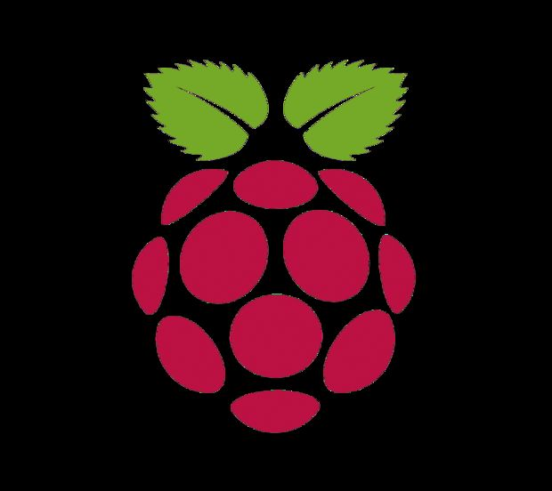

Minecraft Python Library for Minecraft Rasberry Pi Version

I was introduced to the rasberry pi. I followed a turorial to send a message through python into minecraft. We said "Tachanka is ya boi". The code is an overlayed chat window. click here Here